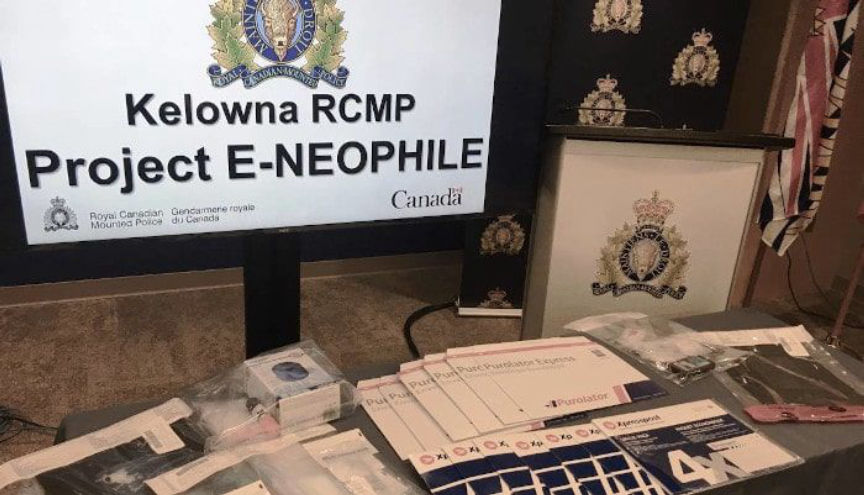
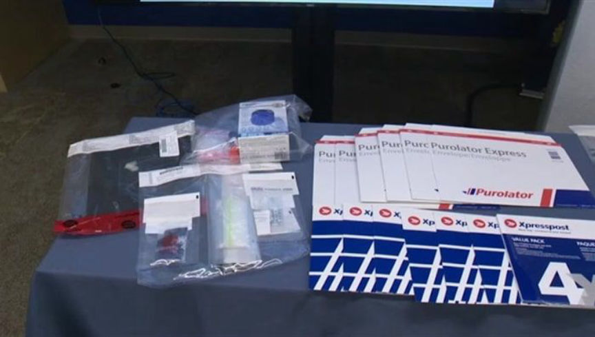
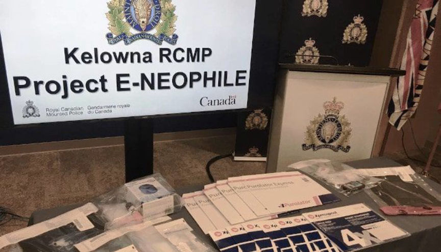
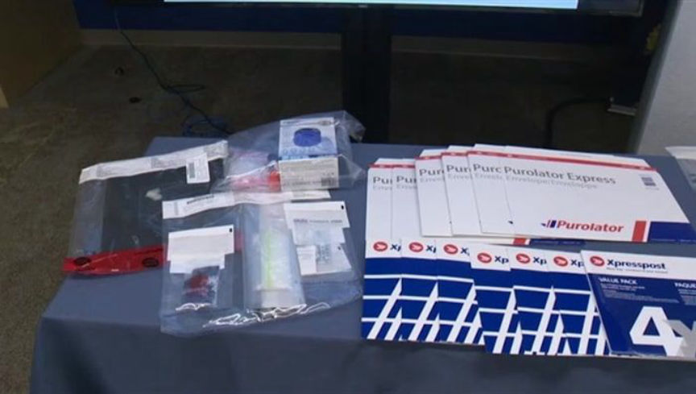

Canadian Fentanyl Vendor Sentenced to 11 Years in Prison
A Canadian darkweb vendor will be spending the next 11 years in prison for selling fentanyl on Alphabay and Dream Market.
James Nelson, 38, of Kelowna, Canada, pleaded guilty earlier this year to one count of trafficking more than 1.5 grams of fentanyl and one count of possessing more than 100 grams of carfentanil with the intent to supply. The charges stemmed from a 14-count indictment that named Nelson and an alleged co-conspirator.

“In communications with the Public Prosecution Service of Canada, it has been indicated this may be one of the most significant and perhaps the most sophisticated fentanyl/carfentanil trafficking and exportation enterprises that has been uncovered in Canada to date,” said Sgt. Alex Lynch of the Kelowna RCMP Street Enforcement Unit.
The Royal Canadian Mounted Police (RCMP) started investigating the couple in September 2016 as a part of Project E-Neophile. Investigators in Canada received information from law enforcement agencies in other countries during the investigation, including the Internal Revenue Service in the United States. During an investigation into an undisclosed actor on the darkweb, the IRS had identified Nelson as a darkweb vendor. The information from the IRS linked Nelson to the “FatTuesday_13” account on Alphabay Market.
In response to the report from the IRS, Canadian investigators physically surveilled Nelson and his alleged co-conspirator, Cassie Bonthoux. During surveillance, police regularly observed Bonthoux dropping packages off at the Post Office. They also saw her purchasing magazines in bulk, a piece of information that helped confirm the link between FatTuesday_13 and Nelson.

Undercover investigators purchased fentanyl from FatTuesday_13 on Alphabay. The vendor used magazines as a decoy, investigators reported after receiving the packages of fentanyl.
In November 2016, Canadian authorities seized a package of fentanyl addressed to Nelson. In response, Nelson placed the FatTuesday_13 account in vacation mode and never returned. This halted the investigation until July 2017 when investigators found the same vendor account on Dream Market. One month later, police raided a Kelowna business owned by Bonthoux and a house owned by Nelson. During the raids, the police recovered more than 120 grams of fentanyl and carfentanil. They also found 90 Canada Post mailing receipts for one month, two firearms, and 19.2 Bitcoins.
One year later, the Canadian government unsealed a 14-count indictment that included six trafficking charges, four charges of importing/exporting drugs, and three firearm-related charges. In July 2019, the Crown stayed six of the charges listed in the indictment, including three of the trafficking charges, two of the importing/exporting charges, and one firearms charge.
In February 2020, Nelson pleaded guilty to trafficking fentanyl and possession for the purpose of trafficking carfentanil. Nelson’s guilty plea ensured Bonthoux’s freedom; the deal required the prosecution to drop the charges against Bonthoux if Nelson pleaded guilty to the two trafficking charges.
At a recent sentencing hearing, the prosecution asked the court to sentence Nelson to 16 years in prison. The presiding judge sentenced Nelson to only 11 years in prison. Factors in the judge’s decision included Nelson’s former opioid addiction and his willingness to enter a guilty plea. Nelson had previously told the court that he and Bonthoux had spent more than $10,000 every month on opioids for personal use.
James Nelson, 38, of Kelowna, Canada, pleaded guilty earlier this year to one count of trafficking more than 1.5 grams of fentanyl and one count of possessing more than 100 grams of carfentanil with the intent to supply. The charges stemmed from a 14-count indictment that named Nelson and an alleged co-conspirator.

Evidence seized during the investigation into Nelson and Bonthoux
“In communications with the Public Prosecution Service of Canada, it has been indicated this may be one of the most significant and perhaps the most sophisticated fentanyl/carfentanil trafficking and exportation enterprises that has been uncovered in Canada to date,” said Sgt. Alex Lynch of the Kelowna RCMP Street Enforcement Unit.
The Royal Canadian Mounted Police (RCMP) started investigating the couple in September 2016 as a part of Project E-Neophile. Investigators in Canada received information from law enforcement agencies in other countries during the investigation, including the Internal Revenue Service in the United States. During an investigation into an undisclosed actor on the darkweb, the IRS had identified Nelson as a darkweb vendor. The information from the IRS linked Nelson to the “FatTuesday_13” account on Alphabay Market.
In response to the report from the IRS, Canadian investigators physically surveilled Nelson and his alleged co-conspirator, Cassie Bonthoux. During surveillance, police regularly observed Bonthoux dropping packages off at the Post Office. They also saw her purchasing magazines in bulk, a piece of information that helped confirm the link between FatTuesday_13 and Nelson.

The magazines purchased by Bonthoux matched those used in the FatTuesday_13 packages
Undercover investigators purchased fentanyl from FatTuesday_13 on Alphabay. The vendor used magazines as a decoy, investigators reported after receiving the packages of fentanyl.
In November 2016, Canadian authorities seized a package of fentanyl addressed to Nelson. In response, Nelson placed the FatTuesday_13 account in vacation mode and never returned. This halted the investigation until July 2017 when investigators found the same vendor account on Dream Market. One month later, police raided a Kelowna business owned by Bonthoux and a house owned by Nelson. During the raids, the police recovered more than 120 grams of fentanyl and carfentanil. They also found 90 Canada Post mailing receipts for one month, two firearms, and 19.2 Bitcoins.
One year later, the Canadian government unsealed a 14-count indictment that included six trafficking charges, four charges of importing/exporting drugs, and three firearm-related charges. In July 2019, the Crown stayed six of the charges listed in the indictment, including three of the trafficking charges, two of the importing/exporting charges, and one firearms charge.
In February 2020, Nelson pleaded guilty to trafficking fentanyl and possession for the purpose of trafficking carfentanil. Nelson’s guilty plea ensured Bonthoux’s freedom; the deal required the prosecution to drop the charges against Bonthoux if Nelson pleaded guilty to the two trafficking charges.
At a recent sentencing hearing, the prosecution asked the court to sentence Nelson to 16 years in prison. The presiding judge sentenced Nelson to only 11 years in prison. Factors in the judge’s decision included Nelson’s former opioid addiction and his willingness to enter a guilty plea. Nelson had previously told the court that he and Bonthoux had spent more than $10,000 every month on opioids for personal use.